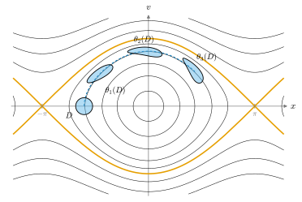

2.7 상미분방정식의 존재와 유일성
이 절의 목표
- 1계 연립 상미분방정식의 초기값 문제를 정확히 세우고, 해의 국소 존재·유일성·초기값에 대한 매끄러운 의존성을 가정까지 정확히 진술할 수 있다.
- 최대해와 사상 \(\theta(t, x)\)의 성질(정의역이 열린집합, 매끄러움, \(\theta(t, \theta(s, x)) = \theta(t + s, x)\))을 말하고, 그 가운데 증명할 수 있는 부분을 증명할 수 있다.
- 탈출 보조정리로 해가 모든 시간에서 존재함을 보일 수 있고, 선형 방정식의 해가 구간 전체에서 존재함을 설명할 수 있다.
- 고계 방정식, 시간에 의존하는 방정식, 매개변수가 있는 방정식을 1계 자율계로 바꿀 수 있다.
선수 지식
- 따름정리 2.2.2, 정의 2.2.11 (매끄러운 사상), 명제 2.2.12
- 정의 2.3.1 (미분동형사상), 보조정리 2.3.6 (축소사상 원리)
- 정의 2.2.7 (작용소 노름)
- 미적분학에서 알려진 사실로 받아들이는 것: 컴팩트 집합(\(\R^n\)의 유계인 닫힌집합)에 대한 하이네-보렐 정리와 최댓값·최솟값 정리 (2.1절 준비. 증명은 3장의 정리 3.6.7과 정리 3.6.10)
동기
2.6절까지 다룬 도구는 사상을 미분하고 적분하는 것이었다. 미분기하에는 그 반대 방향의 문제도 자주 나온다. 미분을 알 때 원래 대상을 찾는 것이다. 곡률과 비틀림률이 주어졌을 때 곡선을 찾는 문제(5장), 곡면이나 다양체 위의 “가장 곧은 곡선”인 측지선을 찾는 문제(9장, 23장), 벡터를 곡선을 따라 “평행하게” 옮기는 문제(22장), 벡터장을 따라 점을 흘려보내는 문제(15장)가 모두 상미분방정식을 푸는 문제로 바뀐다.
이때 필요한 것은 해를 공식으로 구하는 방법이 아니라 다음 세 질문의 답이다. 해가 있는가? 해가 하나뿐인가? 초기값을 조금 바꾸면 해도 조금만, 그것도 매끄럽게 바뀌는가? 이 절은 이 질문들에 대한 표준적인 정리들을 정확히 진술한다. 존재·유일성과 매끄러운 의존성의 증명은 길고 이 study set의 범위를 넘으므로 참고문헌으로 돌린다. 대신 그 정리들로부터 뒤의 장이 쓰는 형태(최대해, 흐름의 성질, 전역 존재의 판정)를 이끌어 내는 부분은 증명한다.

초기값 문제
이 절에서 \(U \subseteq \R^n\)은 열린집합이고 \(V\colon U \to \R^n\)은 매끄러운 사상이다. \(V\)는 시간에 의존하지 않는다. 이런 방정식을 자율계라 부른다. 시간에 의존하는 경우는 명제 2.7.11에서 이것으로 줄인다.
정의 2.7.1 (초기값 문제와 해, initial value problem). \(J \subseteq \R\)이 열린구간이고 \(\gamma\colon J \to U\)가 미분가능하며 모든 \(t \in J\)에서 \[ \gamma'(t) = V(\gamma(t)) \] 이면 \(\gamma\)를 방정식 \(x' = V(x)\)의 해라 한다. \(t_0 \in \R\), \(x_0 \in U\)가 주어졌을 때 \(t_0 \in J\)이고 \(\gamma(t_0) = x_0\)인 해를 찾는 문제를 초기값 문제(initial value problem)라 하고, \(x_0\)을 초기값이라 한다.
성분으로 쓰면 \(n\)개의 1계 방정식 \((x^i)' = V^i(x^1, \dots, x^n)\)을 동시에 푸는 것이다. \(V\)가 자율계이므로 \(\gamma\)가 해이면 시간을 옮긴 \(t \mapsto \gamma(t + c)\)도 해다(연쇄법칙). 그래서 초기 시각은 대개 \(t_0 = 0\)으로 둔다.
예 2.7.2 (원과 나선). (a) \(V(x, y) = (-y, x)\)라 하자. 반지름 \(r\)인 원의 기준 매개화 \(\gamma(t) = (r\cos t, r\sin t)\)는 \(\gamma'(t) = (-r\sin t, r\cos t) = V(\gamma(t))\)이므로 \(\gamma(0) = (r, 0)\)인 해다. (b) \(b \neq 0\)이고 \(V(x, y, z) = (-y, x, b)\)라 하자. 나선 \(\gamma(t) = (a\cos t, a\sin t, bt)\)는 \(\gamma'(t) = (-a\sin t, a\cos t, b) = V(\gamma(t))\)이므로 \(\gamma(0) = (a, 0, 0)\)인 해다. 두 해 모두 모든 \(t \in \R\)에서 정의된다. 정리 2.7.6의 유일성에 의해 이 초기값을 갖는 해는 이것뿐이다.
명제 2.7.3 (해는 매끄럽다). \(V\)가 매끄러우면 \(x' = V(x)\)의 모든 해 \(\gamma\colon J \to U\)는 매끄럽다.
증명. \(\gamma\)는 미분가능하므로 연속이다(명제 2.1.7). \(\gamma\)가 \(C^k\)급이면 \(\gamma' = V \circ \gamma\)는 명제 2.2.12(b)에 의해 \(C^k\)급이므로 \(\gamma\)는 \(C^{k+1}\)급이다. \(k = 0\)에서 시작하는 귀납법으로 \(\gamma\)는 모든 \(k\)에 대해 \(C^k\)급이다.
해의 존재와 유일성을 말하기 전에, 무엇이 잘못될 수 있는지 두 예로 보자. 첫째 예는 \(V\)가 매끄럽지 않을 때, 둘째 예는 \(V\)가 매끄러워도 생기는 일이다.
비예 2.7.4 (\(V\)가 매끄럽지 않으면 해가 여럿일 수 있다). \(n = 1\), \(V(x) = 3\abs{x}^{2/3}\)이라 하자. \(V\)는 연속이지만 \(0\)에서 미분가능하지 않다. 초기값 \(\gamma(0) = 0\)에 대하여 \(\gamma_1(t) = 0\)과 \(\gamma_2(t) = t^3\)이 모두 해다. \(\gamma_2'(t) = 3t^2 = 3\abs{t^3}^{2/3}\)이기 때문이다. 더 나아가 임의의 \(c \ge 0\)에 대해 “\(t \le c\)이면 \(0\), \(t \gt c\)이면 \((t - c)^3\)”도 해다. 유일성은 \(V\)의 매끄러움(적어도 립시츠 연속성)을 필요로 한다.
검증: verify/v-2-7-ode.py
비예 2.7.5 (매끄러워도 해가 유한 시간에 폭발할 수 있다). \(n = 1\), \(V(x) = x^2\)(\(\R\) 전체에서 매끄럽다), \(\gamma(0) = 1\)이라 하자. \(\gamma(t) = 1/(1 - t)\)는 \(\gamma'(t) = 1/(1 - t)^2 = \gamma(t)^2\)이므로 \((-\infty, 1)\)에서 해다. \(t \to 1^-\)이면 \(\gamma(t) \to \infty\)이므로 이 해는 \(t = 1\)을 넘어 이어질 수 없다. 따라서 해의 존재는 일반적으로 짧은 시간 동안만 보장된다.
검증: verify/v-2-7-ode.py
존재, 유일성, 매끄러운 의존성
정리 2.7.6 (국소 존재, 유일성, 초기값에 대한 매끄러운 의존성). \(U \subseteq \R^n\)이 열린집합이고 \(V\colon U \to \R^n\)이 매끄럽다고 하자.
- (a) 존재. 모든 \(x_0 \in U\)에 대하여 \(x_0\)을 포함하는 열린집합 \(W \subseteq U\)와 \(\varepsilon \gt 0\)이 있어서, 모든 \(x \in W\)에 대해 \(\gamma_x(0) = x\)인 해 \(\gamma_x\colon (-\varepsilon, \varepsilon) \to U\)가 있다.
- (b) 유일성. \(\gamma\colon J \to U\)와 \(\tilde\gamma\colon \tilde J \to U\)가 해이고 어떤 \(t_0 \in J \cap \tilde J\)에서 \(\gamma(t_0) = \tilde\gamma(t_0)\)이면, \(J \cap \tilde J\) 전체에서 \(\gamma = \tilde\gamma\)이다.
- (c) 매끄러운 의존성. (a)의 해들을 모은 사상 \(\theta\colon (-\varepsilon, \varepsilon) \times W \to U\), \(\theta(t, x) = \gamma_x(t)\)는 매끄럽다.
이 정리가 말하는 것. 초기값마다 짧은 시간 동안 해가 꼭 하나 있고, 그 시간의 길이 \(\varepsilon\)은 \(x_0\) 근처의 초기값들에 대해 한꺼번에 잡을 수 있으며, 해를 시간과 초기값의 함수로 보면 두 변수 모두에 대해 매끄럽다.
이 정리는 증명하지 않는다. 존재와 유일성은 \(\gamma(t) = x_0 + \int_0^t V(\gamma(s))\,ds\)라는 적분방정식을 보조정리 2.3.6과 같은 축소사상 원리(함수공간에서의)로 푸는 피카르 반복으로 증명하고, 매끄러운 의존성은 해의 변분방정식을 분석해 증명한다. 증명은 [Lee-ISM 부록 D]에 있다. do Carmo는 \(\R^2\)의 경우를 같은 형태로 진술하고 증명을 다른 책으로 돌린다 [dC §3-4, 정리 1과 정리 2]. (a)와 (b)는 \(V\)가 \(C^1\)급이기만 해도 성립하고, \(V\)가 \(C^k\)급이면 (c)의 \(\theta\)는 \(C^k\)급이다.
국소적인 해들을 이어 붙이면 “가장 긴” 해를 얻는다.
정리 2.7.7 (최대해와 그 성질). \(V\colon U \to \R^n\)이 매끄럽다고 하자.
- (a) 모든 \(x \in U\)에 대하여 \(0\)을 포함하는 열린구간 \(J(x)\)와 해 \(\theta^{(x)}\colon J(x) \to U\), \(\theta^{(x)}(0) = x\)가 있어서, \(\gamma(0) = x\)인 모든 해 \(\gamma\colon J \to U\)는 \(J \subseteq J(x)\)이고 \(\gamma = \theta^{(x)}|_J\)이다. 이 \(\theta^{(x)}\)를 \(x\)에서 출발하는 최대해(maximal solution)라 한다.
- (b) \(\mathcal{D} = \{(t, x) \in \R \times U : t \in J(x)\}\)는 \(\R \times U\)의 열린집합이고, \(\theta\colon \mathcal{D} \to U\), \(\theta(t, x) = \theta^{(x)}(t)\)는 매끄럽다.
- (c) \(x \in U\)이고 \(s \in J(x)\)이면 \(J(\theta(s, x)) = J(x) - s = \{t - s : t \in J(x)\}\)이고, 모든 \(t \in J(x) - s\)에 대하여 \[ \theta(t, \theta(s, x)) = \theta(t + s, x) \] 이다.
이 정리가 말하는 것. (a) 초기값마다 더 늘일 수 없는 해가 꼭 하나 있다. (b) 그 해들은 시간과 초기값에 대해 한꺼번에 매끄럽다. (c) “\(s\)만큼 흐른 뒤 다시 \(t\)만큼 흐르는 것”은 “\(t + s\)만큼 흐르는 것”과 같다. \(\theta_t(x) = \theta(t, x)\)로 쓰면 (c)는 \(\theta_t \circ \theta_s = \theta_{t+s}\)이고, 특히 \(\theta_t\)는 역사상 \(\theta_{-t}\)를 가지며(정의되는 곳에서) \(\theta_0 = \id_U\)이다.
증명 아이디어: (a)는 \(x\)에서 출발하는 모든 해의 정의역의 합집합에서 해들을 이어 붙인다. 유일성 때문에 이어 붙이는 방법이 하나뿐이다. (c)는 시간을 옮긴 해가 다시 해라는 것과 (a)의 최대성에서 나온다.
증명. (a) \(\gamma(0) = x\)인 해 \(\gamma\)들의 정의역 전체의 합집합을 \(J(x)\)라 하자. 정리 2.7.6(a)에 의해 그런 해가 적어도 하나 있다. 각 정의역은 \(0\)을 포함하는 열린구간이므로 합집합 \(J(x)\)도 \(0\)을 포함하는 열린구간이다. \(t \in J(x)\)이면 \(t\)를 정의역에 포함하는 해 \(\gamma\)가 있고 \(\theta^{(x)}(t) = \gamma(t)\)로 정한다. 두 해 \(\gamma, \tilde\gamma\)가 모두 \(t\)를 포함하면 두 정의역의 교집합은 \(0\)과 \(t\)를 포함하는 구간이고, 정리 2.7.6(b)에 의해 거기서 \(\gamma = \tilde\gamma\)이므로 \(\theta^{(x)}(t)\)는 잘 정의된다. \(t\) 근처에서 \(\theta^{(x)}\)는 해 \(\gamma\)와 같으므로 \(\theta^{(x)}\)는 해이고, 구성에 의해 \(\gamma(0) = x\)인 모든 해의 정의역이 \(J(x)\)에 포함되며 거기서 \(\theta^{(x)}\)와 같다.
(c) \(y = \theta(s, x)\)라 하자. \(\gamma(t) = \theta^{(x)}(t + s)\) (\(t \in J(x) - s\))는 연쇄법칙에서 \(\gamma'(t) = V(\gamma(t))\)이므로 해이고 \(\gamma(0) = y\)이다. (a)에 의해 \(J(x) - s \subseteq J(y)\)이고 \(\theta(t, y) = \theta(t + s, x)\)이다. 거꾸로, \(0 \in J(x)\)이므로 \(-s \in J(x) - s \subseteq J(y)\)이고 \(\theta(-s, y) = \theta(0, x) = x\)이다. 같은 논증을 \(y\)와 \(-s\)에 쓰면 \(J(y) + s \subseteq J(x)\), 즉 \(J(y) \subseteq J(x) - s\)이다. 따라서 \(J(y) = J(x) - s\)이다.
(b)는 정리 2.7.6(a), (c)를 (a)의 최대해와 (c)의 이어 붙이기에 적용해 얻는데, 정의역 \(\mathcal{D}\)가 열린집합이라는 것을 보이는 논증이 길어서 여기서는 진술만 한다. [Lee-ISM 9장]은 이것을 다양체 위의 벡터장에 대해 증명한다(흐름의 기본정리, Lee-ISM 정리 9.12. 번호는 [Lee-IRM 부록 A, 정리 A.42]의 인용으로 확인).
해가 모든 시간에서 존재하는지는 어떻게 판정하는가? 최대해가 유한한 시간에 끝나려면, 그 전에 “\(U\)에서 빠져나가야” 한다.
보조정리 2.7.8 (탈출 보조정리, escape lemma). \(x \in U\)이고 \(J(x) = (\alpha, \beta)\)이며 \(\beta \lt \infty\)라 하자. 그러면 모든 \(t_0 \in J(x)\)에 대하여 \(\theta^{(x)}([t_0, \beta))\)는 \(U\)의 어떤 컴팩트 부분집합에도 포함되지 않는다. \(\alpha \gt -\infty\)일 때도 같다(\((\alpha, t_0]\)에 대해).
증명 아이디어: 컴팩트 집합 \(K\) 위의 점에서는 정리 2.7.6(a)의 시간 \(\varepsilon\)을 한꺼번에 잡을 수 있다. 해가 \(\beta\) 직전까지 \(K\) 안에 있으면 \(\beta\) 직전의 점에서 다시 \(\varepsilon\)만큼 이어 갈 수 있어 최대성에 어긋난다.
증명. \(\theta^{(x)}([t_0, \beta)) \subseteq K\)인 컴팩트 집합 \(K \subseteq U\)가 있다고 하자. 각 \(y \in K\)에 대해 정리 2.7.6(a)의 \(W_y \ni y\)와 \(\varepsilon_y\)를 잡는다. 열린집합 \(W_y\) (\(y \in K\))들이 컴팩트 집합 \(K\)를 덮으므로, 하이네-보렐 정리에 의해 유한개 \(W_{y_1}, \dots, W_{y_N}\)이 \(K\)를 덮는다. 하이네-보렐 정리는 미적분학에서 알려진 사실로 받아들인다(2.1절 준비. 증명은 정리 3.6.7). \(\varepsilon = \min_i \varepsilon_{y_i}\)로 두면, 모든 \(z \in K\)에 대하여 \(z\)에서 출발해 \((-\varepsilon, \varepsilon)\)에서 정의된 해가 있고, 따라서 정리 2.7.7(a)에 의해 \((-\varepsilon, \varepsilon) \subseteq J(z)\)이다. \(t_1 \in [t_0, \beta)\)를 \(t_1 \gt \beta - \varepsilon\)이 되게 잡고 \(z = \theta(t_1, x) \in K\)라 하자. 정리 2.7.7(c)에서 \(J(z) = J(x) - t_1 = (\alpha - t_1,\ \beta - t_1)\)이므로 \(\varepsilon \le \beta - t_1\), 즉 \(t_1 \le \beta - \varepsilon\)이다. 모순이다. \(\alpha\)의 경우는 시간을 거꾸로(\(V\) 대신 \(-V\)) 보면 같다.
이 장에서 컴팩트 집합은 유계인 닫힌집합이므로(2.1절 준비), \(U = \R^n\)일 때 탈출 보조정리는 “유한 시간에 끝나는 최대해는 끝나기 직전에 유계가 아니다”라는 뜻이다. 비예 2.7.5의 \(1/(1 - t)\)가 그렇다. 거꾸로 해가 유계인 영역에 머문다는 것을 보이면 해가 모든 시간에서 존재한다.
고계 방정식, 진자, 시간에 의존하는 방정식
비고 2.7.9 (고계 방정식을 1계 연립으로). \(F\colon U \times \R^n \to \R^n\)이 매끄러울 때 2계 방정식 \(x'' = F(x, x')\)은 새 변수 \(v = x'\)을 도입하면 \(\R^{2n}\)의 1계 자율계
가 된다. \(x\)가 2계 방정식의 해이면 \((x, x')\)은 (2.7.1)의 해이고, 거꾸로 \((x, v)\)가 (2.7.1)의 해이면 첫째 식에서 \(v = x'\)이므로 \(x\)가 2계 방정식의 해다. 따라서 정리 2.7.6과 2.7.7이 그대로 적용되고, 초기값은 위치와 속도의 쌍 \((x(0), x'(0))\)이다. \(k\)계 방정식도 \(x, x', \dots, x^{(k-1)}\)을 변수로 삼아 같은 방법으로 1계로 바꾼다. 9장과 23장의 측지선 방정식이 이런 2계 방정식이다.
예 2.7.10 (진자: 에너지 보존과 모든 시간에서의 존재). 진자 방정식 \(x'' = -\sin x\)는 (2.7.1)로 \(V(x, v) = (v, -\sin x)\)인 \(\R^2\)의 자율계가 된다. \(V\)는 매끄럽다.
- 에너지 보존. \(E(x, v) = \tfrac12 v^2 - \cos x\)라 하자. 해 \(\gamma(t) = (x(t), v(t))\)를 따라 연쇄법칙으로 미분하면 \[ \frac{d}{dt}E(\gamma(t)) = v\,v' + \sin x\,x' = v(-\sin x) + \sin x\cdot v = 0 \] 이므로 \(E\)는 해를 따라 일정하다. 그래서 해의 자취는 \(E\)의 등위곡선 위에 있다(그림 2.7.1).
- 모든 시간에서 존재. 초기값 \((x_0, v_0)\)의 에너지를 \(E_0\)이라 하면 \(\tfrac12 v^2 = E_0 + \cos x \le E_0 + 1\)이므로 \(\abs{v(t)} \le C = \sqrt{2(E_0 + 1)}\)이다. \(\abs{x'} = \abs{v} \le C\)이므로 1변수 평균값 정리에서 \(\abs{x(t) - x_0} \le C\abs{t}\)이다. 최대해의 정의역이 \((\alpha, \beta)\)이고 \(\beta \lt \infty\)라면, \([0, \beta)\)에서 해는 컴팩트 집합 \([x_0 - C\beta,\ x_0 + C\beta] \times [-C, C]\) 안에 머물러 보조정리 2.7.8에 어긋난다. 따라서 \(\beta = \infty\)이고, 같은 방법으로 \(\alpha = -\infty\)이다.
- 흐름. 모든 초기값에서 \(J(x) = \R\)이므로 \(\mathcal{D} = \R \times \R^2\)이고, 정리 2.7.7(b), (c)에 의해 각 \(\theta_t\colon \R^2 \to \R^2\)는 역사상 \(\theta_{-t}\)를 갖는 매끄러운 사상, 즉 미분동형사상이다. 그림의 \(\theta_t(D)\)는 원판 \(D\)의 미분동형 상이다.
검증: verify/v-2-7-ode.py
명제 2.7.11 (시간에 의존하는 방정식과 매개변수). \(J_0\)이 열린구간, \(U \subseteq \R^n\)이 열린집합이고 \(f\colon J_0 \times U \to \R^n\)이 매끄럽다고 하자. 방정식 \(x'(t) = f(t, x(t))\)의 해(열린구간 \(J \subseteq J_0\)에서 정의된 미분가능한 곡선으로 모든 \(t \in J\)에서 이 식을 만족하는 것)에 대하여 다음이 성립한다.
- (a) \(t_0 \in J_0\)일 때 곡선 \(\gamma\)가 \(\gamma(t_0) = x_0\)인 해일 필요충분조건은 \(\Gamma(s) = (t_0 + s,\ \gamma(t_0 + s))\)가 \(J_0 \times U\) 위의 자율계 \[ Y' = \tilde V(Y), \qquad \tilde V(t, x) = (1,\ f(t, x)) \] 의 해이고 \(\Gamma(0) = (t_0, x_0)\)인 것이다.
- (b) 따라서 정리 2.7.6, 2.7.7과 보조정리 2.7.8이 성립한다. 특히 \((t_0, x_0)\)마다 해가 짧은 시간 동안 꼭 하나 있고, 해 \(x(t;\ t_0, x_0)\)은 \((t, t_0, x_0)\)에 대해 매끄럽다.
- (c) \(f\)가 매개변수 \(\mu \in M\)(\(M \subseteq \R^k\) 열린집합)에도 매끄럽게 의존하면, \(\mu' = 0\)을 덧붙인 자율계로 바꿀 수 있고, 해는 \(\mu\)에 대해서도 매끄럽다.
증명. (a) \(\Gamma'(s) = (1,\ \gamma'(t_0 + s))\)이고 \(\tilde V(\Gamma(s)) = (1,\ f(t_0 + s, \gamma(t_0 + s)))\)이므로, 두 조건은 \(\gamma'(t) = f(t, \gamma(t))\)와 같다. 거꾸로 \(\tilde V\)의 해 \(\Gamma = (\tau, \xi)\)가 \(\Gamma(0) = (t_0, x_0)\)이면 첫째 성분이 \(\tau' = 1\), \(\tau(0) = t_0\)이므로 \(\tau(s) = t_0 + s\)이고, 그러면 \(\gamma(t) = \xi(t - t_0)\)가 원래 방정식의 해다. (b) \(\tilde V\)는 열린집합 \(J_0 \times U\) 위의 매끄러운 사상이므로 앞의 정리들을 쓸 수 있다. \(x(t;\ t_0, x_0)\)은 \(\tilde V\)의 흐름의 둘째 성분을 \((t - t_0,\ (t_0, x_0))\)에서 계산한 것이므로 매끄럽다. (c) \(M\)을 덧붙인 \(J_0 \times U \times M\) 위의 자율계 \((t, x, \mu)' = (1,\ f(t, x, \mu),\ 0)\)의 해는 \(\mu\)가 상수이고 나머지는 매개변수 \(\mu\)인 방정식의 해이므로, (b)를 이 자율계에 쓰면 된다.
뒤의 장에서 가장 많이 쓰는 것은 선형 방정식이다. 프레네-세레 공식(5장)과 평행이동 방정식(22장)이 그 예다. 선형 방정식은 폭발하지 않는다.
정리 2.7.12 (선형 방정식의 해는 구간 전체에서 존재한다). \(J_0\)이 열린구간이고 \(A\colon J_0 \to \R^{n \times n}\)(행렬값), \(b\colon J_0 \to \R^n\)이 매끄럽다고 하자. 모든 \(t_0 \in J_0\), \(x_0 \in \R^n\)에 대하여 초기값 문제
의 해는 \(J_0\) 전체에서 정의되고 하나뿐이다.
증명 아이디어: \(\abs{x}^2\)의 증가율이 \(\abs{x}^2\)의 상수배로 억제되므로(그뢴월 부등식) 유한 시간에 무한대로 갈 수 없다. 그러면 탈출 보조정리가 전역 존재를 준다.
증명. 명제 2.7.11(a)의 자율계 \(\tilde V(t, x) = (1,\ A(t)x + b(t))\)를 \(J_0 \times \R^n\)에서 생각하고, \((t_0, x_0)\)에서 출발하는 최대해를 \(s \mapsto (t_0 + s, x(t_0 + s))\), 원래 시간으로 정의역을 \((\alpha, \beta) \ni t_0\)라 하자. 유일성은 명제 2.7.11(b)이다. \(\beta \lt \beta_0 = \sup J_0\)이라 가정하자. \([t_0, \beta]\)는 \(J_0\)에 포함된 닫힌 구간이다. \(\norm{A(t)}\)는 \(A(t)\)의 성분의 제곱합의 제곱근 이하이고(명제 1.5.7) 이것과 \(\abs{b(t)}\)는 \(t\)의 연속함수이므로, 유계인 닫힌집합인 닫힌 구간 \([t_0, \beta]\)에서 유계이다. 이것은 최댓값·최솟값 정리로, 미적분학에서 알려진 사실로 받아들인다 (2.1절 준비. 증명은 정리 3.6.10). \(\norm{A(t)} \le a\), \(\abs{b(t)} \le c\)라 하자. \(u(t) = \abs{x(t)}^2\)이면 (2.2.3)과 코시-슈바르츠 부등식에서
\[ u' = 2\inner{x}{Ax + b} \le 2a\abs{x}^2 + 2c\abs{x} \le (2a + 1)u + c^2 \]
이다(\(2c\abs{x} \le \abs{x}^2 + c^2\)). \(k = 2a + 1\)로 두면 \(\frac{d}{dt}\big(e^{-k(t - t_0)}(u + c^2/k)\big) = e^{-k(t - t_0)}(u' - ku - c^2) \le 0\)이므로 \(t \in [t_0, \beta)\)에서 \(u(t) \le (u(t_0) + c^2/k)e^{k(\beta - t_0)} = L^2\)이다. 따라서 \([t_0, \beta)\)에서 자율계의 해 \((t, x(t))\)는 컴팩트 집합 \([t_0, \beta] \times \{\abs{x} \le L\} \subseteq J_0 \times \R^n\)에 머물고, 이것은 보조정리 2.7.8에 어긋난다. 따라서 \(\beta = \beta_0\)이다. 왼쪽 끝도 시간을 거꾸로 보면 같다.
이 정리의 결론은 do Carmo가 곡선론의 기본정리를 증명할 때 쓰는 형태와 같다 [dC 4장 부록]. 거기서도 프레네 방정식을 \(\R^9\)의 선형 연립으로 보고, 해가 구간 전체에서 존재함을 이 사실로 얻는다.
요약
- \(V\)가 매끄러우면 \(x' = V(x)\)의 해는 초기값마다 짧은 시간 동안 꼭 하나 있고, 시간과 초기값에 대해 매끄럽다(정리 2.7.6, 진술만). \(V\)가 매끄럽지 않으면 유일성이 깨질 수 있다.
- 해들을 이어 붙이면 최대해 \(\theta^{(x)}\colon J(x) \to U\)를 얻고, \(\theta(t, \theta(s, x)) = \theta(t + s, x)\)이다(정리 2.7.7).
- 최대해가 유한 시간에 끝나면 끝나기 전에 모든 컴팩트 집합을 벗어난다(탈출 보조정리). 진자처럼 보존량으로 해를 가두면 해는 모든 시간에서 존재한다.
- 고계, 시간 의존, 매개변수가 있는 방정식은 모두 1계 자율계로 바뀐다. 선형 방정식의 해는 계수가 정의된 구간 전체에서 존재한다(정리 2.7.12).
다음 장에서는 이 장에서 ε-δ로 다룬 “가까움”을 거리 없이 말하는 언어, 즉 위상공간을 다룬다. 이 장의 열린집합, 연속, 컴팩트성이 3장에서 정식으로 정의되고 일반화된다.
연습문제
연습 2.7.1 ★ (a) \(x' = x\)의 최대해를 구하여라. (b) \(x' = x^2\), \(x(0) = x_0\)의 최대해와 그 정의역 \(J(x_0)\)을 \(x_0\)의 부호에 따라 구하여라.
풀이
(a) \(x(t) = x_0e^t\)는 \(\R\)에서 해이고, 유일성과 정리 2.7.7(a)에 의해 최대해이며 \(J(x_0) = \R\)이다.
(b) \(x_0 = 0\)이면 \(x \equiv 0\), \(J = \R\)이다. \(x_0 \neq 0\)이면 \(x(t) = x_0/(1 - x_0t)\)가 \(x' = x_0^2/(1 - x_0t)^2 = x^2\)을 만족한다. 분모가 \(0\)이 되는 \(t = 1/x_0\)을 포함하지 않는 \(0\)의 구간이 정의역이므로 \(x_0 \gt 0\)이면 \(J = (-\infty, 1/x_0)\), \(x_0 \lt 0\)이면 \(J = (1/x_0, \infty)\)이다. 끝점에서 \(\abs{x} \to \infty\)이므로 더 늘일 수 없다.
검증: verify/v-2-7-ode.py
연습 2.7.2 ★ \(V(x, y, z) = (-y, x, b)\)에 대하여 \((x_0, y_0, z_0)\)에서 출발하는 최대해를 구하여라.
풀이
\(\gamma(t) = (x_0\cos t - y_0\sin t,\ x_0\sin t + y_0\cos t,\ z_0 + bt)\)라 하면 \(\gamma(0) = (x_0, y_0, z_0)\)이고 \(\gamma'(t) = (-x_0\sin t - y_0\cos t,\ x_0\cos t - y_0\sin t,\ b) = (-\gamma^2(t),\ \gamma^1(t),\ b) = V(\gamma(t))\)이다. \(\R\) 전체에서 정의되므로 최대해이고, 유일성에 의해 이것뿐이다. \((x_0, y_0) = (a, 0)\)이면 나선이다(예 2.7.2). 앞 두 성분은 \((x_0, y_0)\)을 각 \(t\)만큼 돌린 것이다.
검증: verify/v-2-7-ode.py
연습 2.7.3 ★ \(x' = x^2\)에 대하여 \(\theta(t, x) = x/(1 - tx)\)이고 \(\mathcal{D} = \{(t, x) : tx \lt 1\}\)임을 보이고, \(\theta(t, \theta(s, x)) = \theta(t + s, x)\)를 직접 확인하여라.
풀이
연습 2.7.1(b)에서 \(\theta(t, x) = x/(1 - tx)\)이고, \(t \in J(x)\)는 \(0\)과 \(t\) 사이에서 \(1 - \tau x\)가 \(0\)이 되지 않는다는 것, 즉 \(1 - tx \gt 0\)과 같다(\(\tau = 0\)에서 \(1 \gt 0\)이고 \(\tau\)에 대한 일차식이다). 군 성질: \(y = x/(1 - sx)\)이면 \(1 - ty = (1 - sx - tx)/(1 - sx)\)이므로 \(\theta(t, y) = y/(1 - ty) = x/(1 - (s + t)x) = \theta(t + s, x)\)이다.
검증: verify/v-2-7-ode.py
연습 2.7.4 ★ 참인지 거짓인지 판별하고 이유를 대어라. (a) \(V\)가 \(\R^n\) 전체에서 매끄러우면 모든 해는 모든 \(t\)에서 정의된다. (b) 자율계의 두 최대해의 상이 한 점을 공유하면, 한 해는 다른 해의 시간을 옮긴 것이다. (c) 비예 2.7.4는 정리 2.7.6의 반례다. (d) 계수가 \(J_0\)에서 매끄러운 선형 방정식의 해는 \(J_0\) 전체에서 정의된다.
풀이
(a) 거짓. 비예 2.7.5. (b) 참. \(\theta(s_1, x_1) = \theta(s_2, x_2) = y\)이면 정리 2.7.7(c)에서 \(\theta^{(x_1)}(t) = \theta(t - s_1, y)\), \(\theta^{(x_2)}(t) = \theta(t - s_2, y)\)이므로 \(\theta^{(x_2)}(t) = \theta^{(x_1)}(t + s_1 - s_2)\)이다. (c) 거짓. 그 \(V = 3\abs{x}^{2/3}\)은 \(0\)에서 미분가능하지 않으므로 정리의 가정을 만족하지 않는다. (d) 참. 정리 2.7.12.
연습 2.7.5 ★★ \(V(x_0) = 0\)이면 \(x_0\)에서 출발하는 최대해는 상수 곡선이고 \(J(x_0) = \R\)임을 보여라. 이것을 써서, \(V(x_0) = 0\)이고 \(\gamma\)가 상수가 아닌 해이면 \(\gamma\)는 어느 시각에도 \(x_0\)에 있지 않음을 보여라. \(x' = x^2\)에서 \(x(0) \gt 0\)인 해가 \(0\)을 지나지 않는 이유를 설명하여라.
풀이
상수 곡선 \(\gamma(t) = x_0\)은 \(\gamma' = 0 = V(x_0)\)이므로 \(\R\)에서 정의된 해이고, 정리 2.7.7(a)에 의해 최대해다. \(\gamma\)가 해이고 어떤 \(t_1\)에서 \(\gamma(t_1) = x_0\)이면, \(t \mapsto \gamma(t + t_1)\)은 \(x_0\)에서 출발하는 해이므로 유일성에 의해 상수이고, 따라서 \(\gamma\)도 상수다. \(x' = x^2\)에서 \(V(0) = 0\)이므로 상수가 아닌 해는 \(0\)을 지날 수 없고, \(x(0) \gt 0\)이면 연속성(중간값 정리, 2.1절 준비의 (v))에 의해 늘 양수다. (연습 2.7.1(b)의 공식과도 맞는다.)
연습 2.7.6 ★★ 조화진동자 \(x'' + x = 0\)을 (2.7.1)로 1계 연립으로 쓰고, 흐름이 \(\theta_t(x, v) = (x\cos t + v\sin t,\ -x\sin t + v\cos t)\)임을 보여라. \(\theta_t\)는 어떤 선형사상이며, 군 성질은 무엇을 뜻하는가?
풀이
1계 연립은 \((x, v)' = (v, -x)\)이다. 주어진 식은 \(t = 0\)에서 \((x, v)\)이고, \(t\)로 미분하면 \((-x\sin t + v\cos t,\ -x\cos t - v\sin t)\)인데, 이것은 (둘째 성분, 첫째 성분의 \(-1\)배)이므로 해다. 선형 방정식이므로 \(\R\) 전체에서 정의되고(정리 2.7.12) 유일하다. 행렬로 \(\theta_t = \begin{pmatrix} \cos t & \sin t \\ -\sin t & \cos t \end{pmatrix} = R_{-t}\)는 각 \(-t\)만큼의 회전이다. 군 성질 \(\theta_t \circ \theta_s = \theta_{t+s}\)는 \(R_{-t}R_{-s} = R_{-(t+s)}\), 즉 회전의 덧셈정리(연습 1.2.2)다. 해의 자취는 원 \(x^2 + v^2 = \)상수이다.
검증: verify/v-2-7-ode.py
연습 2.7.7 ★★★ \(V\colon \R^n \to \R^n\)이 매끄럽다고 하자. (a) \(\abs{V(x)} \le M\)(상수)이면 모든 최대해가 \(\R\)에서 정의됨을 보여라. (b) 더 일반적으로 상수 \(a, c \ge 0\)에 대해 \(\abs{V(x)} \le a\abs{x} + c\)이면 모든 최대해가 \(\R\)에서 정의됨을 보여라.
힌트
(b)는 정리 2.7.12의 증명처럼 \(u = \abs{x}^2\)의 미분부등식을 만든다.
풀이
(a) 최대해의 오른쪽 끝 \(\beta\)가 유한하다고 하자. \(t \in [0, \beta)\)이면 평균값 부등식(명제 2.2.8, \(n = 1\) 변수의 곡선)에서 \(\abs{\gamma(t) - \gamma(0)} \le M t \le M\beta\)이다. 따라서 \(\gamma([0, \beta))\)는 컴팩트 집합 \(\{\abs{y - \gamma(0)} \le M\beta\}\)에 포함되어 보조정리 2.7.8에 어긋난다. 왼쪽 끝도 같다.
(b) \(u = \abs{\gamma}^2\)이면 \(u' = 2\inner{\gamma}{V(\gamma)} \le 2\abs{\gamma}(a\abs{\gamma} + c) \le (2a + 1)u + c^2\)이다. 정리 2.7.12의 증명과 같이 \(k = 2a + 1\)로 두면 \(t \in [0, \beta)\)에서 \(u(t) \le (u(0) + c^2/k)e^{k\beta}\)이므로 \(\gamma\)는 유계인 닫힌 공, 즉 컴팩트 집합에 머물러 탈출 보조정리에 어긋난다. 따라서 \(\beta = \infty\)이고 왼쪽도 같다. (선형 자율계 \(V(x) = Ax\)는 \(\abs{Ax} \le \norm{A}\abs{x}\)이므로 (b)의 경우다.)